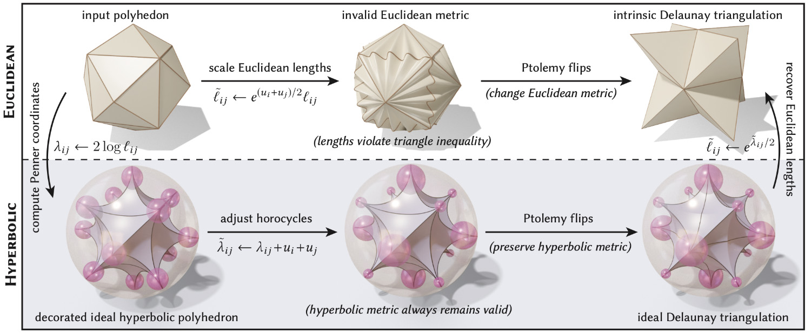

Discrete Conformal Equivalence of Polyhedral Surfaces
This paper describes a numerical method for surface parameterization, yielding maps that are locally injective and discretely conformal in an exact sense. Unlike previous methods for discrete conformal parameterization, the method is guaranteed to work for any manifold triangle mesh, with no restrictions on triangulation quality or cone singularities. In particular we consider maps from surfaces of any genus (with or without boundary) to the plane, or globally bijective maps from genus zero surfaces to the sphere. Recent theoretical developments show that each task can be formulated as a convex problem where the triangulation is allowed to change—we complete the picture by introducing the machinery needed to actually construct a discrete conformal map. In particular, we introduce a new scheme for tracking correspondence between triangulations based on normal coordinates, and a new interpolation procedure based on layout in the light cone. Stress tests involving difficult cone configurations and near-degenerate triangulations indicate that the method is extremely robust in practice, and provides high-quality interpolation even on meshes with poor elements.
Paper
Acknowledgements
This work was supported by a Packard Fellowship, NSF Award 1717320, DFG TRR 109, an NSF Graduate Research Fellowship, and gifts from Autodesk, Adobe, and Facebook.
Bibtex
@article{Gillespie:2021:DCE,
author = {Gillespie, Mark and Springborn, Boris and Crane, Keenan},
title = {Discrete Conformal Equivalence of Polyhedral Surfaces},
journal = {ACM Trans. Graph.},
volume = {40},
number = {4},
year = {2021},
publisher = {ACM},
address = {New York, NY, USA},
url = {https://doi.org/10.1145/3450626.3459763},
doi = {10.1145/3450626.3459763},
}
Selected Figures
Our method robustly handles extremely poor triangulations (left), including almost all models from Thingi10k, as well as extreme configurations of cone singularities (center). It also guarantees global injectivity for discrete conformal maps to the sphere—a case not handled by previous algorithms.
We adopt a notion of conformal equivalence that yields the same discrete conformal map, no matter how the input polyhedral surface is triangulated. Here a mesh with planar faces is triangulated two different ways, yielding identical results.
Beyond just flattening the mesh, we also show how to perform high-quality projective interpolation across intersecting triangulations—providing a high-quality parameterization even for meshes with very low-quality elements.
We can also prescribe boundary lengths or angles (while ensuring local injectivity), or compute a globally injective discrete conformal map to the unit disk.
A key idea in our formulation is that an ordinary triangle mesh (left) can always be viewed as an ideal hyperbolic polyhedron (right), i.e., surface made from triangles of constant negative curvature and all three vertices at infinity.

The reason the hyperbolic perspective is useful is that Euclidean edge lengths that violate the triangle inequality (top) still describe a perfectly valid ideal hyperbolic polyhedra. So, we can scale edge lengths arbitrarily and still apply a well-defined edge flip operation, called a Ptolemy flip, at any moment in the flow (rather than, say, stopping at the first moment where triangles degenerate).

Even when CETM succeeds, the quality of the map may be lower since it effectively considers a different notion of conformal equivalence (based on the input rather than Delaunay triangulation).
Left: The signpost data structure fails to be numerically robust in extreme situations, such as when tracing the “peacock triangulation.” Right: our integer-based encoding ensures we get the right connectivity.
Since we allow edge flips, we need not worry how coarse the mesh is near large cones. Here we set all but one angle defect to almost 2π—the remaining vertex has an angle defect of −1032.79.
In the genus-0 case, our method guarantees a bijective discrete conformal map to a convex polyhedron with vertices on the sphere.
We can handle multiply-connected domains by simply triangulating holes prior to flattening, then removing these triangles after flattening.